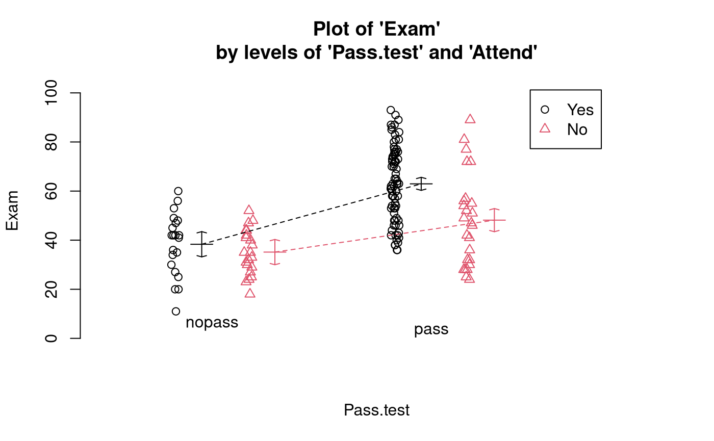
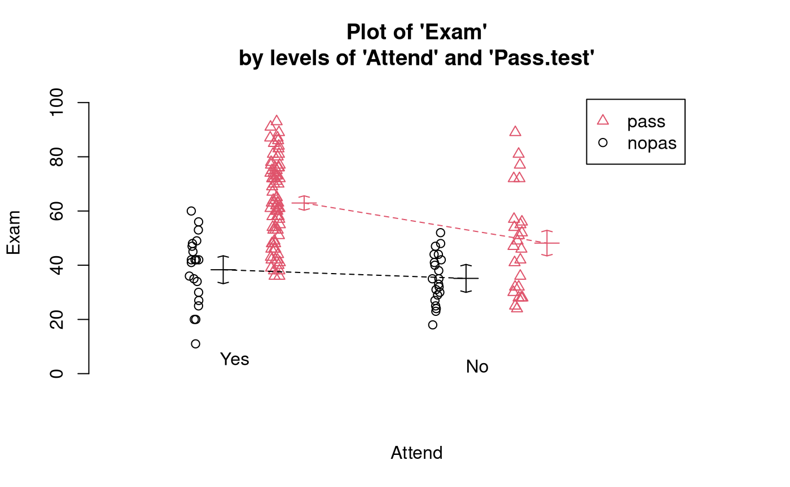
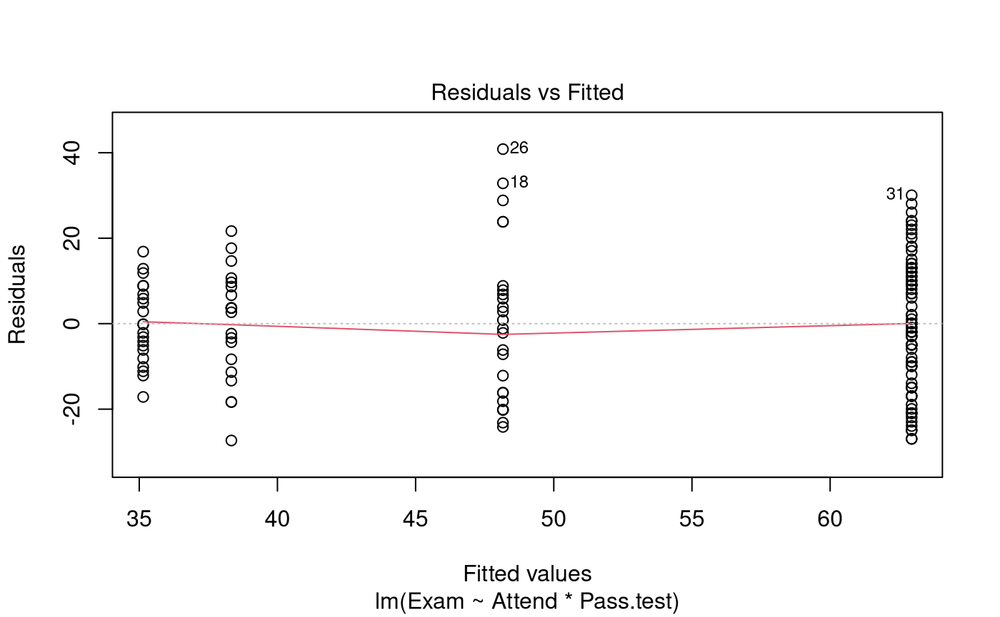
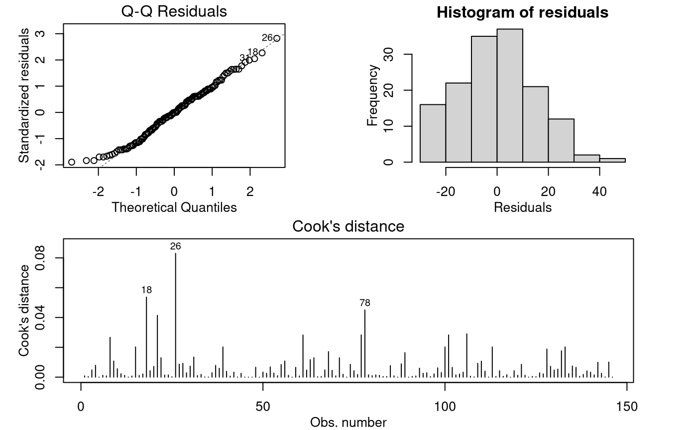

Problem
We wish to determine if regular attendance in class and passing the test is associated with exam mark. We have seen individually that passing the test and regular attendance in class increases the chances for a good exam mark — on average.
The variables of interest are:
-
Exam: Exam mark out of 100. -
Attend: A two-level factor with the levelsYesandNo. -
Pass.test: A two-level factor with the levelsYesandNo.
Question of Interest
We are interested in the relationship between final exam mark and passing the test, and whether this relationship differs for students who did and did not attend lectures regularly.
Read in and Inspect the Data
Stats20x.df = read.table("STATS20x.txt", header = TRUE)
head(Stats20x.df)## Grade Pass Exam Degree Gender Attend Assign Test B C MC Colour Stage1
## 1 C Yes 42 BSc Male Yes 17.2 9.1 5 13 12 Blue C
## 2 B Yes 58 BCom Female Yes 17.2 13.6 12 12 17 Yellow A
## 3 A Yes 81 Other Female Yes 17.2 14.5 14 17 25 Blue A
## 4 A Yes 86 Other Female Yes 19.6 19.1 15 17 27 Yellow A
## 5 D No 35 Other Male No 8.0 8.2 4 1 15 Blue C
## 6 A Yes 72 BCom Female Yes 18.4 12.7 15 17 20 Blue A
## Years.Since Repeat
## 1 2.5 Yes
## 2 2.0 No
## 3 3.0 No
## 4 0.0 No
## 5 3.0 No
## 6 1.5 No
# So, we have to create the variable `Pass.test' using the `Test` variable
Stats20x.df$Pass.test = factor(ifelse(Stats20x.df$Test >= 10, "pass", "nopass"))
# Check if our new variable `Pass.test` was generated correctly
min(Stats20x.df$Test[Stats20x.df$Pass.test == "pass"])## [1] 10
max(Stats20x.df$Test[Stats20x.df$Pass.test == "nopass"])## [1] 9.1
interactionPlots(Exam ~ Pass.test + Attend, data = Stats20x.df)
# Also look at the interaction plot the other way around:
interactionPlots(Exam ~ Attend + Pass.test, data = Stats20x.df)
Exam marks for students who passed the test are centred higher than for students who did not. However, this difference appears to be greater for students who attended lectures than for non-attenders, which can be seen from the non-parallel coloured lines on the interaction plots. In other words, the impact of passing the test appears to differ according to attendance group, suggesting there may be an interaction between the two predictor variables.Model Building and Check Assumptions
Exam.fit = lm(Exam ~ Attend * Pass.test, data = Stats20x.df)
# The model formula could of also been `Exam ~ Attend + Pass.test + Attend:Past.test'
plot(Exam.fit, 1)
modelcheck(Exam.fit, 2:3)
anova(Exam.fit)## Analysis of Variance Table
##
## Response: Exam
## Df Sum Sq Mean Sq F value Pr(>F)
## Attend 1 7630.8 7630.8 34.990 2.364e-08 ***
## Pass.test 1 11076.9 11076.9 50.791 4.763e-11 ***
## Attend:Pass.test 1 909.7 909.7 4.171 0.04297 *
## Residuals 142 30968.4 218.1
## ---
## Signif. codes: 0 '***' 0.001 '**' 0.01 '*' 0.05 '.' 0.1 ' ' 1
summary(Exam.fit)##
## Call:
## lm(formula = Exam ~ Attend * Pass.test, data = Stats20x.df)
##
## Residuals:
## Min 1Q Median 3Q Max
## -27.333 -10.893 -0.046 9.513 40.840
##
## Coefficients:
## Estimate Std. Error t value Pr(>|t|)
## (Intercept) 35.143 3.223 10.905 < 2e-16 ***
## AttendYes 3.190 4.557 0.700 0.48504
## Pass.testpass 13.017 4.371 2.978 0.00341 **
## AttendYes:Pass.testpass 11.599 5.679 2.042 0.04297 *
## ---
## Signif. codes: 0 '***' 0.001 '**' 0.01 '*' 0.05 '.' 0.1 ' ' 1
##
## Residual standard error: 14.77 on 142 degrees of freedom
## Multiple R-squared: 0.3878, Adjusted R-squared: 0.3749
## F-statistic: 29.98 on 3 and 142 DF, p-value: 4.452e-15Paiwise comparisons
## Welcome to emmeans.
## Caution: You lose important information if you filter this package's results.
## See '? untidy'## contrast estimate SE df lower.CL upper.CL t.ratio p.value
## No nopass - Yes nopass -3.19 4.56 142 -15.0 8.66 -0.700 0.8969
## No nopass - No pass -13.02 4.37 142 -24.4 -1.65 -2.978 0.0178
## No nopass - Yes pass -27.81 3.63 142 -37.2 -18.38 -7.669 <0.0001
## Yes nopass - No pass -9.83 4.37 142 -21.2 1.54 -2.248 0.1155
## Yes nopass - Yes pass -24.62 3.63 142 -34.0 -15.19 -6.789 <0.0001
## No pass - Yes pass -14.79 3.39 142 -23.6 -5.98 -4.364 0.0001
##
## Confidence level used: 0.95
## Conf-level adjustment: tukey method for comparing a family of 4 estimates
## P value adjustment: tukey method for comparing a family of 4 estimates
# Get a simpler display using displayPairs:
displayPairs(Exam.pairs, c("Yes", "No"), c("pass", "nopass"))## Note: displayPairs is a s20x function that displays only the within-level
## comparisons from allpairs. To see all comparisons, inspect the allpairs
## output directly.
##
## $Yes
## contrast est lwr upr pval
## Yes nopass - Yes pass -24.61603 -34.04182 -15.19025 1.701486e-09
##
## $No
## contrast est lwr upr pval
## No nopass - No pass -13.01714 -24.38137 -1.652912 0.01776097
##
## $pass
## contrast est lwr upr pval
## No pass - Yes pass -14.78937 -23.59933 -5.979408 0.0001423139
##
## $nopass
## contrast est lwr upr pval
## No nopass - Yes nopass -3.190476 -15.03851 8.657554 0.896901Methods and Assumption Checks
We have two explanatory factors, Pass.test and
Attend, and one numeric response Exam, so we
fitted a two-way ANOVA model with interaction term. The interaction was
significant (P-value = 0.04) so it was retained in the
model.
The model assumptions seem satisfied.
Our final model is where and are dummy variables that take the value 1 if student passed the test and if student regularly attended lectures respectively, otherwise they are 0; and .
Alternatively, our final model could be written as where is the mark of student in test-pass group and attendance group ; and where is the overall mean exam mark, is the effect of whether the student passed the test, is the effect of whether the student regularly attended lectures, is the interaction effect for the combination of a student passing the test and attendance, and . Here, and .
Our model explained 39% of variability in students’ exam marks.
Executive Summary
We are interested in the relationship between final exam mark and passing the test, and whether this relationship differs for those students that attended lectures regularly and those that didn’t.
We have evidence that the relationship between exam mark and test-pass status does depend upon attendance practice.
We estimate that:
- Among students who attended regularly, the average exam mark for those who passed the test was between 15 and 34 marks higher than for those who didn’t pass the test.
- Among students who did not attend regularly, the average exam mark for those who passed the test was between 2 and 24 marks higher than for those who didn’t pass the test.
- Among students who passed the test, the average exam mark for those who attended regularly was between 6 and 24 marks higher than for those who didn’t attend regularly.